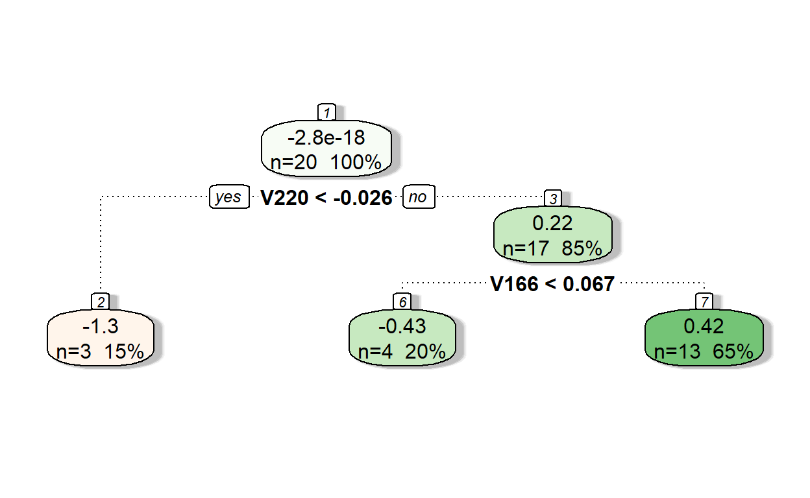
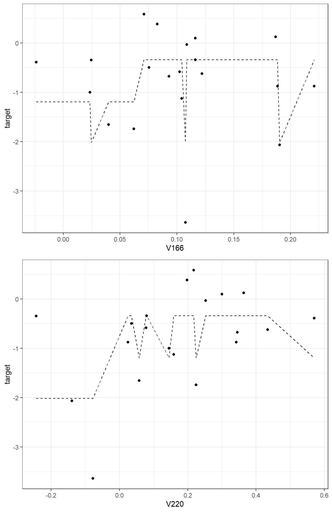
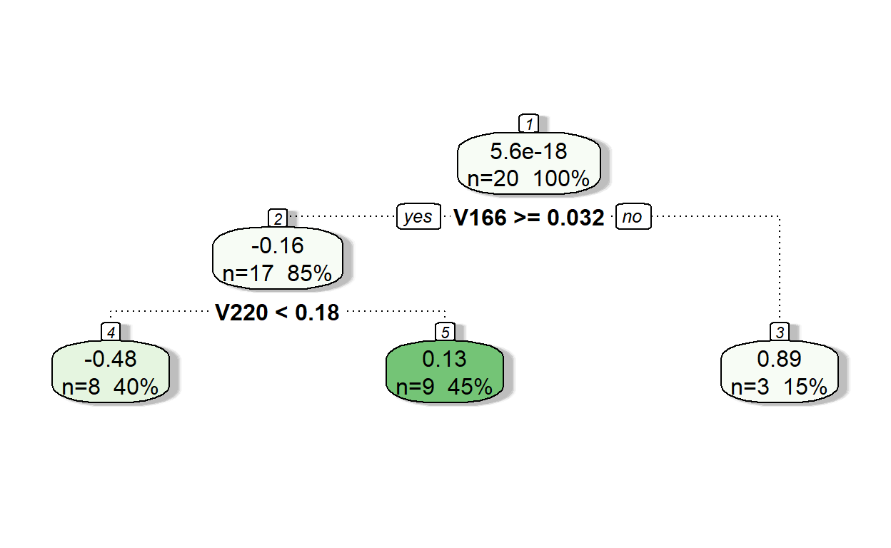
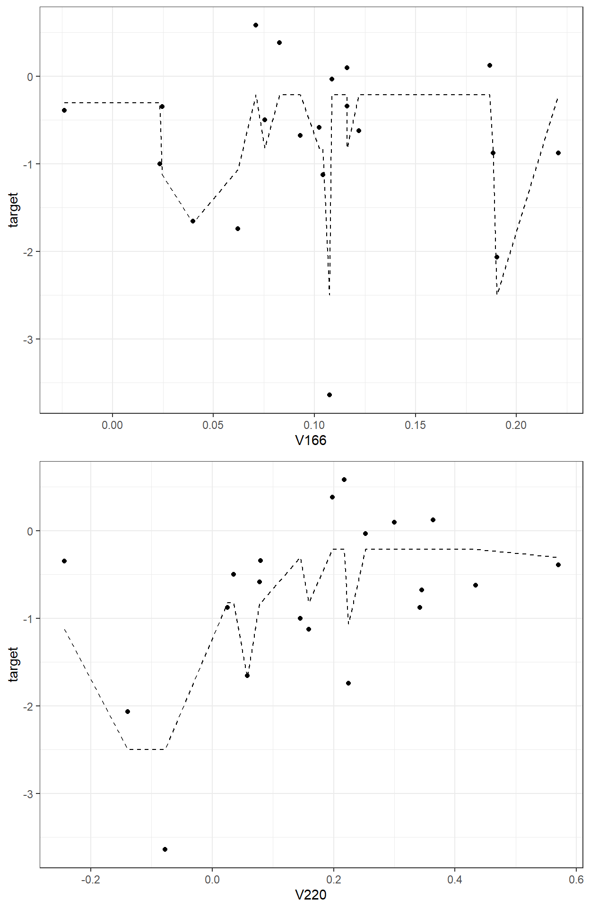
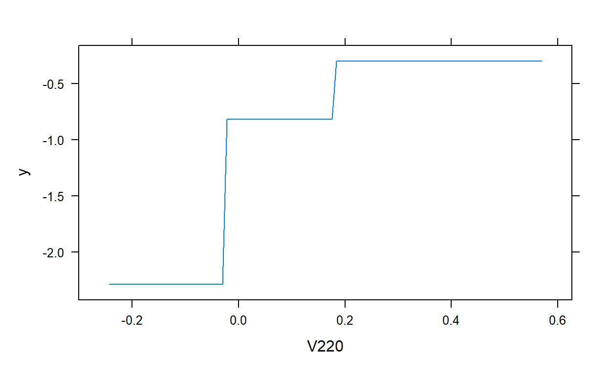
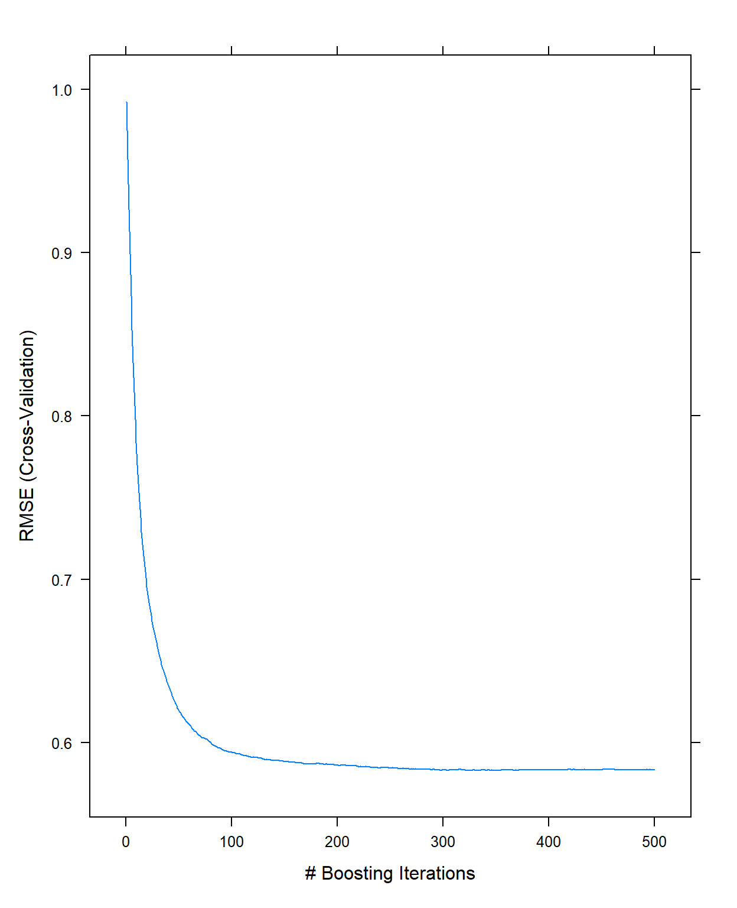
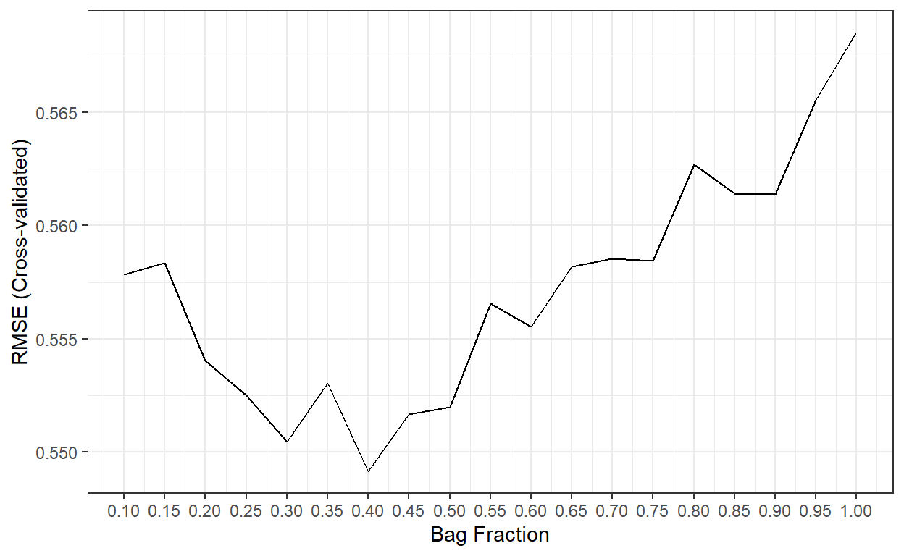
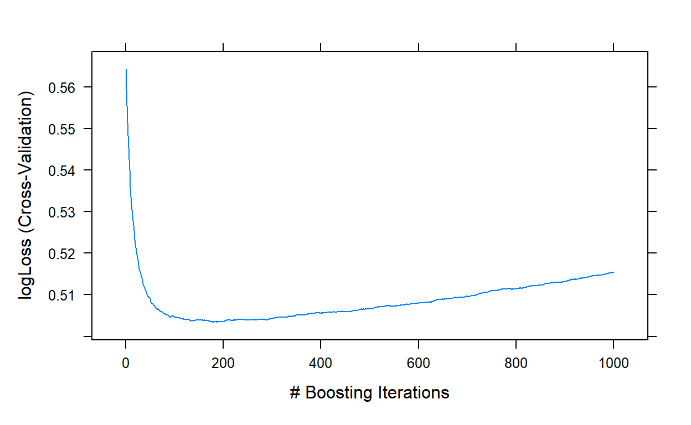
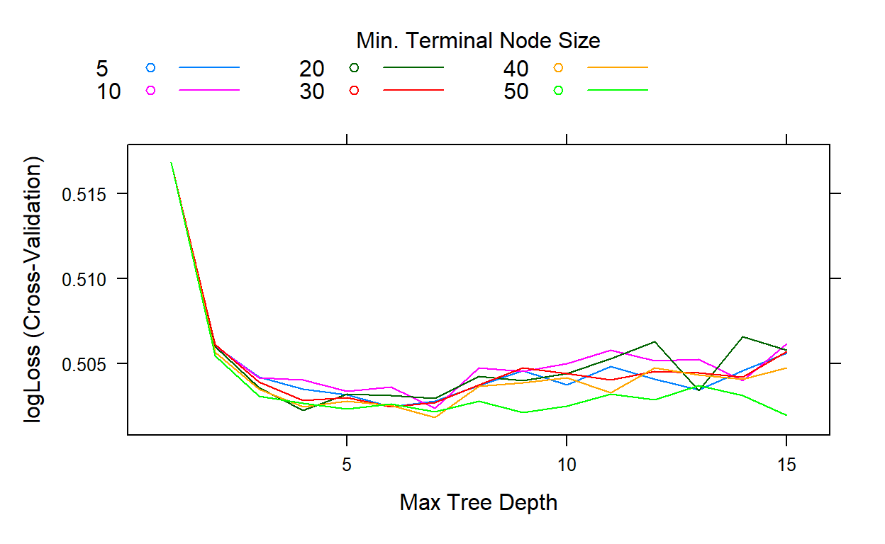
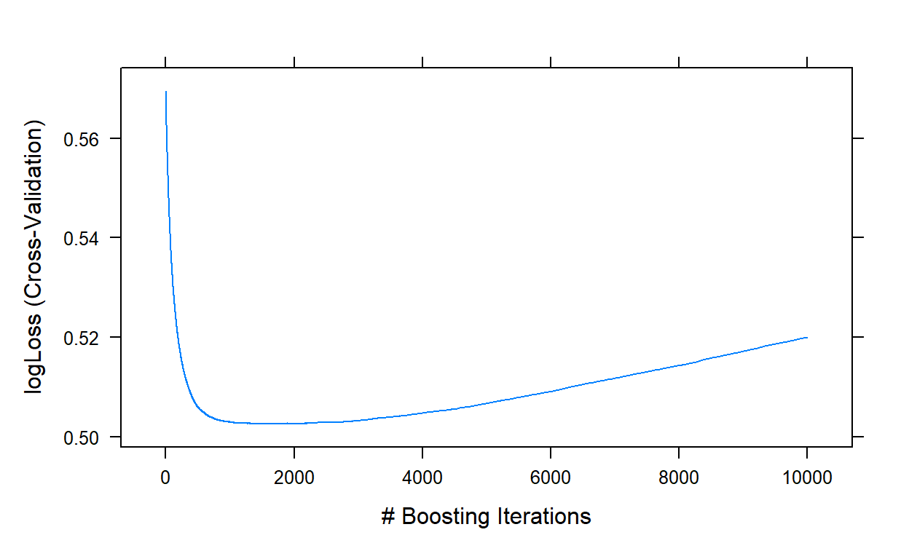

[Updated: Sun, Nov 27, 2022 - 14:16:59 ]
In Bagged Trees or Random Forests models, the trees are developed independently by taking a random sample of rows and columns from the dataset. The main difference between Gradient Boosting Trees and Bagged Trees or Random Forests is that the trees are developed sequentially, and each tree model is built upon the errors of the previous tree models. The sequential process of model building and predictions in gradient-boosted trees can be conceptually demonstrated below.

1. Understanding the Machinery of GBM with Sequential Development of Trees from Residuals
Let’s try to implement this idea in a toy dataset we use to predict a readability score from the number of sentences.
readability_sub <- read.csv('./data/readability_sub.csv',header=TRUE)
readability_sub[,c('V220','V166','target')] V220 V166 target
1 -0.13908258 0.19028091 -2.06282395
2 0.21764143 0.07101288 0.58258607
3 0.05812133 0.03993277 -1.65313060
4 0.02526429 0.18845809 -0.87390681
5 0.22430885 0.06200715 -1.74049148
6 -0.07795373 0.10754109 -3.63993555
7 0.43400714 0.12202360 -0.62284268
8 -0.24364550 0.02454670 -0.34426981
9 0.15893717 0.10422343 -1.12298826
10 0.14496475 0.02339597 -0.99857142
11 0.34222975 0.22065343 -0.87656742
12 0.25219145 0.10865010 -0.03304643
13 0.03532625 0.07549474 -0.49529863
14 0.36410633 0.18675801 0.12453660
15 0.29988593 0.11618323 0.09678258
16 0.19837037 0.08272671 0.38422270
17 0.07807041 0.10235218 -0.58143038
18 0.07935690 0.11618605 -0.34324576
19 0.57000953 -0.02385423 -0.39054205
20 0.34523284 0.09299514 -0.67548411Iteration 0
We start with a simple model that uses the average target outcome to predict the readability for all observations in this toy dataset. We calculate the predictions and residuals from this initial intercept-only model.
readability_sub$pred0 <- mean(readability_sub$target)
readability_sub$res0 <- readability_sub$target - readability_sub$pred
round(readability_sub[,c('V166','V220','target','pred0','res0')],3) V166 V220 target pred0 res0
1 0.190 -0.139 -2.063 -0.763 -1.300
2 0.071 0.218 0.583 -0.763 1.346
3 0.040 0.058 -1.653 -0.763 -0.890
4 0.188 0.025 -0.874 -0.763 -0.111
5 0.062 0.224 -1.740 -0.763 -0.977
6 0.108 -0.078 -3.640 -0.763 -2.877
7 0.122 0.434 -0.623 -0.763 0.140
8 0.025 -0.244 -0.344 -0.763 0.419
9 0.104 0.159 -1.123 -0.763 -0.360
10 0.023 0.145 -0.999 -0.763 -0.235
11 0.221 0.342 -0.877 -0.763 -0.113
12 0.109 0.252 -0.033 -0.763 0.730
13 0.075 0.035 -0.495 -0.763 0.268
14 0.187 0.364 0.125 -0.763 0.888
15 0.116 0.300 0.097 -0.763 0.860
16 0.083 0.198 0.384 -0.763 1.148
17 0.102 0.078 -0.581 -0.763 0.182
18 0.116 0.079 -0.343 -0.763 0.420
19 -0.024 0.570 -0.391 -0.763 0.373
20 0.093 0.345 -0.675 -0.763 0.088# SSE at the end of Iteration 0
sum(readability_sub$res0^2)[1] 17.73309Iteration 1
Now, we fit a tree model to predict the residuals of Iteration 0 from
the two predictors (Features V220 and V166). Notice that we fix the
value of specific parameters while fitting the tree model (e.g.,
cp, minsplit,maxdepth).
require(rpart)
require(rattle)
model1 <- rpart(formula = res0 ~ V166 + V220,
data = readability_sub,
method = "anova",
control = list(minsplit=2,
cp=0,
minbucket = 2,
maxdepth = 2)
)
fancyRpartPlot(model1,type=2,sub='')
Let’s see the predictions of residuals from Model 1.
pr.res <- predict(model1, readability_sub)
pr.res 1 2 3 4 5 6
-1.2523541 0.4220391 -0.4323615 0.4220391 -0.4323615 -1.2523541
7 8 9 10 11 12
0.4220391 -1.2523541 0.4220391 -0.4323615 0.4220391 0.4220391
13 14 15 16 17 18
0.4220391 0.4220391 0.4220391 0.4220391 0.4220391 0.4220391
19 20
-0.4323615 0.4220391 Now, let’s add the predicted residuals from Iteration 1 to the predictions from Iteration 0 to obtain the new predictions.
readability_sub$pred1 <- readability_sub$pred0 + pr.res
readability_sub$res1 <- readability_sub$target - readability_sub$pred1
round(readability_sub[,c('V166','V220','target','pred0','res0','pred1','res1')],3) V166 V220 target pred0 res0 pred1 res1
1 0.190 -0.139 -2.063 -0.763 -1.300 -2.016 -0.047
2 0.071 0.218 0.583 -0.763 1.346 -0.341 0.924
3 0.040 0.058 -1.653 -0.763 -0.890 -1.196 -0.457
4 0.188 0.025 -0.874 -0.763 -0.111 -0.341 -0.533
5 0.062 0.224 -1.740 -0.763 -0.977 -1.196 -0.545
6 0.108 -0.078 -3.640 -0.763 -2.877 -2.016 -1.624
7 0.122 0.434 -0.623 -0.763 0.140 -0.341 -0.282
8 0.025 -0.244 -0.344 -0.763 0.419 -2.016 1.671
9 0.104 0.159 -1.123 -0.763 -0.360 -0.341 -0.782
10 0.023 0.145 -0.999 -0.763 -0.235 -1.196 0.197
11 0.221 0.342 -0.877 -0.763 -0.113 -0.341 -0.535
12 0.109 0.252 -0.033 -0.763 0.730 -0.341 0.308
13 0.075 0.035 -0.495 -0.763 0.268 -0.341 -0.154
14 0.187 0.364 0.125 -0.763 0.888 -0.341 0.466
15 0.116 0.300 0.097 -0.763 0.860 -0.341 0.438
16 0.083 0.198 0.384 -0.763 1.148 -0.341 0.726
17 0.102 0.078 -0.581 -0.763 0.182 -0.341 -0.240
18 0.116 0.079 -0.343 -0.763 0.420 -0.341 -0.002
19 -0.024 0.570 -0.391 -0.763 0.373 -1.196 0.805
20 0.093 0.345 -0.675 -0.763 0.088 -0.341 -0.334# SSE at the end of Iteration 1
sum(readability_sub$res1^2)[1] 9.964654
Iteration 2
We repeat Iteration 1, but the only difference is that we now fit a tree model to predict the residuals at the end of Iteration 1.
model2 <- rpart(formula = res1 ~ V166 + V220,
data = readability_sub,
method = "anova",
control = list(minsplit=2,
cp=0,
minbucket = 2,
maxdepth = 2)
)
fancyRpartPlot(model2,type=2,sub='')
Let’s see the predictions of residuals from Model 2.
pr.res <- predict(model2, readability_sub)
pr.res 1 2 3 4 5 6
-0.4799134 0.1295162 -0.4799134 -0.4799134 0.1295162 -0.4799134
7 8 9 10 11 12
0.1295162 0.8912203 -0.4799134 0.8912203 0.1295162 0.1295162
13 14 15 16 17 18
-0.4799134 0.1295162 0.1295162 0.1295162 -0.4799134 -0.4799134
19 20
0.8912203 0.1295162 Now, add the predicted residuals from Iteration 2 to the predictions from Iteration 1 to obtain the new predictions.
readability_sub$pred2 <- readability_sub$pred1 + pr.res
readability_sub$res2 <- readability_sub$target - readability_sub$pred2
round(readability_sub[,c('V166','V220','target',
'pred0','res0','pred1','res1',
'pred2','res2')],3) V166 V220 target pred0 res0 pred1 res1 pred2 res2
1 0.190 -0.139 -2.063 -0.763 -1.300 -2.016 -0.047 -2.496 0.433
2 0.071 0.218 0.583 -0.763 1.346 -0.341 0.924 -0.212 0.794
3 0.040 0.058 -1.653 -0.763 -0.890 -1.196 -0.457 -1.676 0.022
4 0.188 0.025 -0.874 -0.763 -0.111 -0.341 -0.533 -0.821 -0.053
5 0.062 0.224 -1.740 -0.763 -0.977 -1.196 -0.545 -1.066 -0.674
6 0.108 -0.078 -3.640 -0.763 -2.877 -2.016 -1.624 -2.496 -1.144
7 0.122 0.434 -0.623 -0.763 0.140 -0.341 -0.282 -0.212 -0.411
8 0.025 -0.244 -0.344 -0.763 0.419 -2.016 1.671 -1.124 0.780
9 0.104 0.159 -1.123 -0.763 -0.360 -0.341 -0.782 -0.821 -0.302
10 0.023 0.145 -0.999 -0.763 -0.235 -1.196 0.197 -0.304 -0.694
11 0.221 0.342 -0.877 -0.763 -0.113 -0.341 -0.535 -0.212 -0.665
12 0.109 0.252 -0.033 -0.763 0.730 -0.341 0.308 -0.212 0.179
13 0.075 0.035 -0.495 -0.763 0.268 -0.341 -0.154 -0.821 0.326
14 0.187 0.364 0.125 -0.763 0.888 -0.341 0.466 -0.212 0.336
15 0.116 0.300 0.097 -0.763 0.860 -0.341 0.438 -0.212 0.309
16 0.083 0.198 0.384 -0.763 1.148 -0.341 0.726 -0.212 0.596
17 0.102 0.078 -0.581 -0.763 0.182 -0.341 -0.240 -0.821 0.240
18 0.116 0.079 -0.343 -0.763 0.420 -0.341 -0.002 -0.821 0.478
19 -0.024 0.570 -0.391 -0.763 0.373 -1.196 0.805 -0.304 -0.086
20 0.093 0.345 -0.675 -0.763 0.088 -0.341 -0.334 -0.212 -0.464# SSE at the end of Iteration 2
sum(readability_sub$res2^2)[1] 5.588329
We can keep iterating and add tree models as long as we find a tree model that improves our predictions (minimizing SSE).
2. A more formal introduction of Gradient Boosting Trees
Let \(\mathbf{x}_i = (x_{i1},x_{i2},x_{i3},...,x_{ij})\) represent a vector of observed values for the \(i^{th}\) observation on \(j\) predictor variables, and \(y_i\) is the value of the target outcome for the \(i^{th}\) observation. A gradient-boosted tree model is an ensemble of \(T\) different tree models sequentially developed, and the final prediction of the outcome is obtained by using an additive function as
\[ \hat{y_i} = \sum_{t=1}^{T}f_t(\mathbf{x}_i),\]
where \(f_t\) is a tree model obtained at Iteration \(t\) from the residuals at Iteration \(t-1\).
The algorithm optimizes an objective function \(\mathfrak{L}(\mathbf{y},\mathbf{\hat{y}})\) in an additive manner. This objective loss function can be defined as the sum of squared errors when the outcome is continuous or logistic loss when the outcome is categorical.
The algorithm starts with a constant prediction. For instance, we start with the average outcome in the above example. Then, a new tree model that minimizes the objective loss function is searched and added at each iteration.
\[\hat{y}_{i}^{(0)} = \bar{y}\] \[\hat{y}_{i}^{(1)} = \hat{y}_{i}^{(0)} + \alpha f_1(\mathbf{x}_i)\]
\[\hat{y}_{i}^{(2)} = \hat{y}_{i}^{(1)} + \alpha f_2(\mathbf{x}_i)\] \[.\] \[.\] \[.\] \[\hat{y}_{i}^{(t)} = \hat{y}_{i}^{(t-1)} + \alpha f_t(\mathbf{x}_i)\]
Notice that I added a multiplier, \(\alpha\) while adding our predictions at each iteration. In the above example, we fixed this multiplier to 1, \(\alpha = 1\), as we added a whole new prediction to the previous prediction. This multiplier in machine learning literature is called the learning rate. We could also choose to add only a fraction of new predictions (e.g., \(\alpha = 0.1,0.05,0.01,0.001\)) at each iteration.
The smaller the learning rate, the more iterations (more tree models) we will need to achieve the same level of performance. So, the number of iterations (number of tree models, \(T\)) and the learning rate (\(\alpha\)) play in tandem. These two parameters are known as the boosting hyperparameters and need to be tuned.
Think about choosing a learning rate as choosing your speed on a highway and number of trees as the time it takes to arrive at your destination. Suppose you are traveling from Eugene to Portland on I-5. If you drive 40 miles/hour, you are less likely to involve in an accident because you are more aware of your surroundings, but it will take 3-4 hours to arrive at your destination. If you are 200 miles/hour, it will only take an hour to arrive at your destination, assuming you will not have an accident on the way (which is very likely). So, you try to find a speed level that is fast enough to arrive at your destination and safe enough not to have an accident.
TECHNICAL NOTE
Why do people call it Gradient Boosting? It turns out that the updates at each iteration based on the residuals from a previous model are related to the concept of negative gradient (first derivative) of the objective loss function with respect to the predicted values from the previous step.
\[-g_i^t = -\frac{\partial \mathfrak{L}(y_i,\hat{y}_i^{t-1})}{\partial \hat{y}_i^{t-1}} = \hat{y}_{i}^{(t)} - \hat{y}_{i}^{(t-1)} \]
The general logic of gradient boosting works as
take a differentiable loss function, \(\mathfrak{L}(\mathbf{y},\mathbf{\hat{y}})\), that summarizes the distance between observed and predicted values,
start with an initial model to obtain initial predictions, \(f_0(\mathbf{x}_i)\),
iterate until termination:
calculate the negative gradients of the loss function with respect to predictions from the previous step
fit a tree model to the negative gradients
update the predictions (with a multiplier, a.k.a learning rate).
Most software uses mathematical approximations and computational hocus pocus to do these computations for faster implementation.
3.
Fitting Gradient Boosting Trees using the gbm package
The gradient boosting trees can be fitted using the gbm
function from the `gbm package. The code below tries to replicate our
example above using the toy dataset.
Model and Data:
formula, a description of the outcome and predictive variables in the model using column namesdata, the name of the data object to look for the variables in the formula statementdistribution, a character to specify the type of objective loss function to optimize. ‘gaussian’ is typically used for continuous outcomes(minimize the squared error), and ‘bernoulli’ is typically used for the binary outcomes (minimizes the logistic loss)
Hyperparameters:
n.trees, number of trees to fit (the number of iterations)shrinkage, learning rate.interaction.depth, the maximum depth of each tree developed at each iterationn.minobsinnode, the minimum number of observations in each terminal note of tree models at each iteration
Stochastic Gradient Boosting:
bag.fraction, the proportion of observations to be randomly selected for developing a new tree at each iteration.
In Gradient Boosting Trees, we use all observations (100% of rows)
when we develop a new tree model at each iteration. So, we can set
bag.fraction=1, and gbm fits a gradient
boosting tree model. On the other hand, adding a random component may
help yield better performance. You can think about this as a marriage of
Bagging and Boosting. So, we may want to take a random sample of
observations to develop a tree model at each iteration. For instance, if
you set bag.fraction=.9, the algorithm will randomly sample
90% of the observations at each iteration before fitting the new tree
model to residuals from the previous step. When
bag.fraction is lower than 1, this is called
Stochastic Gradient Boosting Trees.
bag.fraction can also be considered a hyperparameter to
tune by trying different values to find an optimal value, or it can be
fixed to a certain number.
Cross-validation:
cv.folds, number of cross-validation folds to perform.
Parallel Processing:
n.cores, the number of CPU cores to use.
# Obtain predictions from the model
predict(gbm.model) [1] -2.4955898 -0.2117671 -1.6755972 -0.8211966 -1.0661677 -2.4955898
[7] -0.2117671 -1.1244561 -0.8211966 -0.3044636 -0.2117671 -0.2117671
[13] -0.8211966 -0.2117671 -0.2117671 -0.2117671 -0.8211966 -0.8211966
[19] -0.3044636 -0.2117671# Plot the final model
plot(gbm.model,i.var = 1)plot(gbm.model,i.var = 2)
4.
Fitting Gradient Boosting Trees using the caret package and
Hyperparameter Tuning
The gbm algorithm is available in the caret
package. Let’s check the hyperparameters available to tune.
require(caret)
getModelInfo()$gbm$parameters parameter class label
1 n.trees numeric # Boosting Iterations
2 interaction.depth numeric Max Tree Depth
3 shrinkage numeric Shrinkage
4 n.minobsinnode numeric Min. Terminal Node SizeThe four most critical parameters are all available to tune. It is very challenging to find the best combination of values for all these four hyperparameters unless you implement a full grid search which may take a very long time. You may apply a general sub-optimal strategy to tune the hyperparameters step by step, either in pairs or one by one. Below is one way to implement such a strategy:
Fix the
interaction.depthandn.minobsinnodeto a certain value (e.g., interaction.depth = 5, n.minobsinnode = 10),Pick a small value of learning rate (
shrinkage), such as 0.05 or 0.1,Do a grid search and find the optimal number of trees (
n.trees) using the fixed values at #1 and #2,Fix the
n.treesat its optimal value from #3, keepshrinkagethe same as in #2, and do a two-dimensional grid search forinteraction.depthandn.minobsinnodeand find the optimal number of depth and minimum observation in a terminal node,Fix the
interaction.depthand `n.minobsinnode’at their optimal values from #4, lower the learning rate and increase the number of trees to see if the model performance can be further improved.Fix
interaction.depth,n.minobsinnode,shrinkage, andn.treesat their optimal values from previus steps, and do a grid search forbag.fraction.
You will find an interactive app you can play at the link below to understand the dynamics among these hyperparameters and optimize them in toy examples.
http://arogozhnikov.github.io/2016/07/05/gradient_boosting_playground.html
5. Predicting Readability Scores Using Gradient Boosting Trees
First, we import and prepare data for modeling. Then, we split the data into training and test pieces.
require(recipes)
require(caret)
# Import the dataset
readability <- read.csv(here('data/readability_features.csv'),header=TRUE)
# Write the recipe
blueprint_readability <- recipe(x = readability,
vars = colnames(readability),
roles = c(rep('predictor',768),'outcome')) %>%
step_zv(all_numeric()) %>%
step_nzv(all_numeric()) %>%
step_normalize(all_numeric_predictors())
# Train/Test Split
set.seed(10152021) # for reproducibility
loc <- sample(1:nrow(readability), round(nrow(readability) * 0.9))
read_tr <- readability[loc, ]
read_te <- readability[-loc, ]
dim(read_tr)
dim(read_te)[1] 2551 769[1] 283 769Prepare the data partitions for 10-fold cross validation.
# Cross validation settings
read_tr = read_tr[sample(nrow(read_tr)),]
# Create 10 folds with equal size
folds = cut(seq(1,nrow(read_tr)),breaks=10,labels=FALSE)
# Create the list for each fold
my.indices <- vector('list',10)
for(i in 1:10){
my.indices[[i]] <- which(folds!=i)
}
cv <- trainControl(method = "cv",
index = my.indices)Set the multiple cores for parallel processing.
require(doParallel)
ncores <- 10
cl <- makePSOCKcluster(ncores)
registerDoParallel(cl)Step 1: Tune the number of trees
Now, we will fix the learning rate at 0.1
(shrinkage=0.1), interaction depth at 5
(interaction.depth=5), and the minimum number of
observations at 10 (n.minobsinnode = 10). We will do a grid
search for the number of trees from 1 to 500
(n.trees = 1:500). Note that I fix the bag fraction at one
and passed it as an argument in the caret::train function
because it is not allowed in the hyperparameter grid.
# Grid Settings
grid <- expand.grid(shrinkage = 0.1,
n.trees = 1:500,
interaction.depth = 5,
n.minobsinnode = 10)
gbm1 <- caret::train(blueprint_readability,
data = read_tr,
method = 'gbm',
trControl = cv,
tuneGrid = grid,
bag.fraction = 1,
verbose = FALSE)
gbm1$times$everything
user system elapsed
65.00 1.59 160.42
$final
user system elapsed
52.47 0.14 52.61
$prediction
[1] NA NA NAIt took about 3 minutes to run. We can now look at the plot and examine how the cross-validated RMSE changes as a function of the number of trees.
plot(gbm1,type='l')
It indicates there is not much improvement after 300 trees with these settings (this is just eyeballing, there is nothing specific about how to come up with this number). So, I will fix the number of trees to 300 for the next step.
Step 2: Tune the interaction depth and minimum number of observations
Now, we will fix the number of trees at 300
(n.trees = 300) and the learning rate at 0.1
(shrinkage=0.1).
Then, we will do a grid search by assigning values for the interaction depth from 1 to 15 and values for the minimum number of observations at 5, 10, 20, 30, 40, and 50. We still keep the bag fraction as 1.
grid <- expand.grid(shrinkage = 0.1,
n.trees = 300,
interaction.depth = 1:15,
n.minobsinnode = c(5,10,20,30,40,50))
gbm2 <- caret::train(blueprint_readability,
data = read_tr,
method = 'gbm',
trControl = cv,
tuneGrid = grid,
bag.fraction = 1,
verbose = FALSE)
gbm2$times$everything
user system elapsed
87.53 1.55 7433.68
$final
user system elapsed
75.17 0.14 75.30
$prediction
[1] NA NA NAThis search took about 1 hour and 10 minutes. If we look at the cross-validates RMSE for all these 90 possible conditions, we see that the best result comes out when the interaction depth is equal to 9, and the minimum number of observations is equal to 50.
plot(gbm2,type='l')gbm2$bestTune n.trees interaction.depth shrinkage n.minobsinnode
54 300 9 0.1 50gbm2$results[which.min(gbm2$results$RMSE),] shrinkage interaction.depth n.minobsinnode n.trees RMSE
54 0.1 9 50 300 0.5759197
Rsquared MAE RMSESD RsquaredSD MAESD
54 0.6904758 0.4582852 0.02670278 0.03351747 0.02441325Step 3: Lower the learning rate and increase the number of trees
Now, we will fix the interaction depth at 9
(interaction.depth = 9) and the minimum number of
observations at 50 (n.minobsinnode = 50). We will lower the
learning rate to 0.01 (shrinkage=0.01) and increase the
number of trees to 8000 (n.trees = 1:8000) to explore if a
lower learning rate improves the performance.
grid <- expand.grid(shrinkage = 0.01,
n.trees = 1:8000,
interaction.depth = 9,
n.minobsinnode = 50)
gbm3 <- caret::train(blueprint_readability,
data = read_tr,
method = 'gbm',
trControl = cv,
tuneGrid = grid,
bag.fraction = 1,
verbose= FALSE)
gbm3$times$everything
user system elapsed
1703.83 0.94 3821.78
$final
user system elapsed
1689.69 0.09 1719.50
$prediction
[1] NA NA NAplot(gbm3,type='l')gbm3$bestTune n.trees interaction.depth shrinkage n.minobsinnode
7948 7948 9 0.01 50gbm3$results[which.min(gbm3$results$RMSE),] shrinkage interaction.depth n.minobsinnode n.trees RMSE
7948 0.01 9 50 7948 0.568526
Rsquared MAE RMSESD RsquaredSD MAESD
7948 0.6990292 0.453076 0.02218744 0.02806958 0.01829231This run took about another 40 minutes. The best performance was
obtained with a model of 7948 trees, and yielded an RMSE value of
0.5685. We can stop here and decide that this is our final model. Or, we
can play with bag.fraction and see if we can improve the
performance a little more.
Step 4: Tune Bag Fraction
To play with the bag.fraction, we should write our own
syntax as caret::train does not allow it to be manipulated
as a hyperparameter.
Notice that I fixed the values of shrinkage,
n.trees,interaction.depth,n.minobsinnode
at their optimal values.
Then, I write a for loop to iterate over different
values of bag.fraction from 0.1 to 1 with increments of
0.05. I save the model object from each iteration in a list object.
grid <- expand.grid(shrinkage = 0.01,
n.trees = 7948,
interaction.depth = 9,
n.minobsinnode = 50)
bag.fr <- seq(0.1,1,.05)
my.models <- vector('list',length(bag.fr))
for(i in 1:length(bag.fr)){
my.models[[i]] <- caret::train(blueprint_readability,
data = read_tr,
method = 'gbm',
trControl = cv,
tuneGrid = grid,
bag.fraction = bag.fr[i],
verbose= FALSE)
}It took about 17 hours to complete with ten cores. Let’s check if it improved the performance.
cv.rmse <- c()
for(i in 1:length(bag.fr)){
cv.rmse[i] <- my.models[[i]]$results$RMSE
}
ggplot()+
geom_line(aes(x=bag.fr,y=cv.rmse))+
theme_bw()+
xlab('Bag Fraction')+
ylab('RMSE (Cross-validated)')+
scale_x_continuous(breaks = bag.fr)
The best performance was obtained when bag.fr is equal
to 0.40.
Finally, we can check the performance of the final model with these settings on the test dataset and compare it to other methods.
final.gbm <- my.models[[7]]
# Predictions from a Bagged tree model with 158 trees
predicted_te <- predict(final.gbm,read_te)
# MAE
mean(abs(read_te$target - predicted_te))[1] 0.4479047[1] 0.5509891# R-square
cor(read_te$target,predicted_te)^2[1] 0.7135852| R-square | MAE | RMSE | |
|---|---|---|---|
| Ridge Regression | 0.727 | 0.435 | 0.536 |
| Lasso Regression | 0.725 | 0.434 | 0.538 |
| Gradient Boosting | 0.714 | 0.448 | 0.551 |
| Random Forests | 0.671 | 0.471 | 0.596 |
| Bagged Trees | 0.656 | 0.481 | 0.604 |
| Linear Regression | 0.644 | 0.522 | 0.644 |
| KNN | 0.623 | 0.500 | 0.629 |
| Decision Tree | 0.497 | 0.577 | 0.729 |
6. Predicting Recidivism Using Gradient Boosting Trees
The code below implements a similar strategy and demonstrates how to fit a Gradient Boosting Tree model for the Recidivism dataset to predict recidivism in Year 2.
Import the dataset and initial data preparation
# Import data
recidivism <- read.csv(here('data/recidivism_y1 removed and recoded.csv'),
header=TRUE)
# List of variable types in the dataset
outcome <- c('Recidivism_Arrest_Year2')
id <- c('ID')
categorical <- c('Residence_PUMA',
'Prison_Offense',
'Age_at_Release',
'Supervision_Level_First',
'Education_Level',
'Prison_Years',
'Gender',
'Race',
'Gang_Affiliated',
'Prior_Arrest_Episodes_DVCharges',
'Prior_Arrest_Episodes_GunCharges',
'Prior_Conviction_Episodes_Viol',
'Prior_Conviction_Episodes_PPViolationCharges',
'Prior_Conviction_Episodes_DomesticViolenceCharges',
'Prior_Conviction_Episodes_GunCharges',
'Prior_Revocations_Parole',
'Prior_Revocations_Probation',
'Condition_MH_SA',
'Condition_Cog_Ed',
'Condition_Other',
'Violations_ElectronicMonitoring',
'Violations_Instruction',
'Violations_FailToReport',
'Violations_MoveWithoutPermission',
'Employment_Exempt')
numeric <- c('Supervision_Risk_Score_First',
'Dependents',
'Prior_Arrest_Episodes_Felony',
'Prior_Arrest_Episodes_Misd',
'Prior_Arrest_Episodes_Violent',
'Prior_Arrest_Episodes_Property',
'Prior_Arrest_Episodes_Drug',
'Prior_Arrest_Episodes_PPViolationCharges',
'Prior_Conviction_Episodes_Felony',
'Prior_Conviction_Episodes_Misd',
'Prior_Conviction_Episodes_Prop',
'Prior_Conviction_Episodes_Drug',
'Delinquency_Reports',
'Program_Attendances',
'Program_UnexcusedAbsences',
'Residence_Changes',
'Avg_Days_per_DrugTest',
'Jobs_Per_Year')
props <- c('DrugTests_THC_Positive',
'DrugTests_Cocaine_Positive',
'DrugTests_Meth_Positive',
'DrugTests_Other_Positive',
'Percent_Days_Employed')
# Convert all nominal, ordinal, and binary variables to factors
for(i in categorical){
recidivism[,i] <- as.factor(recidivism[,i])
}
# Write the recipe
require(recipes)
blueprint_recidivism <- recipe(x = recidivism,
vars = c(categorical,numeric,props,outcome,id),
roles = c(rep('predictor',48),'outcome','ID')) %>%
step_indicate_na(all_of(categorical),all_of(numeric),all_of(props)) %>%
step_zv(all_numeric()) %>%
step_impute_mean(all_of(numeric),all_of(props)) %>%
step_impute_mode(all_of(categorical)) %>%
step_logit(all_of(props),offset=.001) %>%
step_poly(all_of(numeric),all_of(props),degree=2) %>%
step_normalize(paste0(numeric,'_poly_1'),
paste0(numeric,'_poly_2'),
paste0(props,'_poly_1'),
paste0(props,'_poly_2')) %>%
step_dummy(all_of(categorical),one_hot=TRUE) %>%
step_num2factor(Recidivism_Arrest_Year2,
transform = function(x) x + 1,
levels=c('No','Yes'))
blueprint_recidivismTrain/Test Split and Cross-validation Settings
# Train/Test Split
loc <- which(recidivism$Training_Sample==1)
recidivism_tr <- recidivism[loc, ]
recidivism_te <- recidivism[-loc, ]
# Cross validation settings
set.seed(10302021) # for reproducibility
recidivism_tr = recidivism_tr[sample(nrow(recidivism_tr)),]
# Create 10 folds with equal size
folds = cut(seq(1,nrow(recidivism_tr)),breaks=10,labels=FALSE)
# Create the list for each fold
my.indices <- vector('list',10)
for(i in 1:10){
my.indices[[i]] <- which(folds!=i)
}
cv <- trainControl(method = "cv",
index = my.indices,
classProbs = TRUE,
summaryFunction = mnLogLoss)Step 1: Initial model fit to tune the number of trees
We fix the learning rate at 0.1 (shrinkage=0.1),
interaction depth at 5 (interaction.depth=5), and the minimum number of
observations at 10 (n.minobsinnode = 10). We do a grid
search for the optimal number of trees from 1 to 1000
(n.trees = 1:1000).
grid <- expand.grid(shrinkage = 0.1,
n.trees = 1:1000,
interaction.depth = 5,
n.minobsinnode = 10)
gbm1 <- caret::train(blueprint_recidivism,
data = recidivism_tr,
method = 'gbm',
trControl = cv,
tuneGrid = grid,
bag.fraction = 1,
metric = 'logLoss')
plot(gbm1,type='l')
gbm1$bestTune
n.trees interaction.depth shrinkage n.minobsinnode
178 178 5 0.1 10It indicates that a model with 178 trees is optimal at the initial search.
Step 2: Tune the interaction depth and minimum number of observations
We fix the number of trees at 178 (n.trees = 178) and
the learning rate at 0.1 (shrinkage=0.1). Then, we do a
grid search by assigning values for the interaction depth from 1 to 15
and the minimum number of observations at 5, 10, 20, 30, 40, and 50.
grid <- expand.grid(shrinkage = 0.1,
n.trees = 178,
interaction.depth = 1:15,
n.minobsinnode = c(5,10,20,30,40,50))
gbm2 <- caret::train(blueprint_recidivism,
data = recidivism_tr,
method = 'gbm',
trControl = cv,
tuneGrid = grid,
bag.fraction = 1,
metric = 'logLoss')
plot(gbm2)
gbm2$bestTune
n.trees interaction.depth shrinkage n.minobsinnode
41 178 7 0.1 40The search indicates that the best performance is obtained when the interaction depth equals 7 and the minimum number of observations equals 40.
Step 3: Lower the learning rate and increase the number of trees
We fix the interaction depth at 7
(interaction.depth = 4) and the minimum number of
observations at 40 (n.minobsinnode = 40). We will lower the
learning rate to 0.01 (shrinkage=0.01) and increase the number of trees
to 10000 (n.trees = 1:10000) to explore if a lower learning
rate improves the performance.
grid <- expand.grid(shrinkage = 0.01,
n.trees = 1:10000,
interaction.depth = 7,
n.minobsinnode = 40)
gbm3 <- caret::train(blueprint_recidivism,
data = recidivism_tr,
method = 'gbm',
trControl = cv,
tuneGrid = grid,
bag.fraction = 1,
metric = 'logLoss')
plot(gbm3,type='l')
gbm3$bestTune
n.trees interaction.depth shrinkage n.minobsinnode
1731 1731 7 0.01 40Step 4: Tune the bag fraction
grid <- expand.grid(shrinkage = 0.01,
n.trees = 1731,
interaction.depth = 7,
n.minobsinnode = 40)
bag.fr <- seq(0.1,1,.05)
my.models <- vector('list',length(bag.fr))
for(i in 1:length(bag.fr)){
my.models[[i]] <- caret::train(blueprint_recidivism,
data = recidivism_tr,
method = 'gbm',
trControl = cv,
tuneGrid = grid,
bag.fraction = bag.fr[i])
}cv.LogL <- c()
for(i in 1:length(bag.fr)){
cv.LogL[i] <- my.models[[i]]$results$logLoss
}
ggplot()+
geom_line(aes(x=bag.fr,y=cv.LogL))+
theme_bw()+
xlab('Bag Fraction')+
ylab('LogLoss (Cross-validated)')+
scale_x_continuous(breaks = bag.fr)bag.fr[which.min(cv.LogL)][1] 0.7The best result is obtained when the bag fraction is 0.7. So, we will proceed with that as our final model.
Step 5: Final Predictions on Test Set
final.gbm <- my.models[[13]]
# Predict the probabilities for the observations in the test dataset
predicted_te <- predict(final.gbm, recidivism_te, type='prob')
head(predicted_te) No Yes
1 0.9479557 0.05204431
2 0.6394094 0.36059065
3 0.7002056 0.29979444
4 0.6725847 0.32741529
5 0.8364610 0.16353899
6 0.7666956 0.23330437# Compute the AUC
require(cutpointr)
cut.obj <- cutpointr(x = predicted_te$Yes,
class = recidivism_te$Recidivism_Arrest_Year2)
auc(cut.obj)[1] 0.7465408# Confusion matrix assuming the threshold is 0.5
pred_class <- ifelse(predicted_te$Yes>.5,1,0)
confusion <- table(recidivism_te$Recidivism_Arrest_Year2,pred_class)
confusion pred_class
0 1
0 3957 189
1 1109 205# True Negative Rate
confusion[1,1]/(confusion[1,1]+confusion[1,2])[1] 0.9544139# False Positive Rate
confusion[1,2]/(confusion[1,1]+confusion[1,2])[1] 0.04558611# True Positive Rate
confusion[2,2]/(confusion[2,1]+confusion[2,2])[1] 0.1560122# Precision
confusion[2,2]/(confusion[1,2]+confusion[2,2])[1] 0.5203046Comparison of Results
| -LL | AUC | ACC | TPR | TNR | FPR | PRE | |
|---|---|---|---|---|---|---|---|
| Gradient Boosting Trees | 0.499 | 0.747 | 0.763 | 0.156 | 0.954 | 0.046 | 0.520 |
| Random Forests | 0.507 | 0.725 | 0.761 | 0.153 | 0.954 | 0.046 | 0.514 |
| Bagged Trees | 0.506 | 0.724 | 0.759 | 0.144 | 0.954 | 0.046 | 0.500 |
| Logistic Regression | 0.510 | 0.719 | 0.755 | 0.142 | 0.949 | 0.051 | 0.471 |
| Logistic Regression with Ridge Penalty | 0.511 | 0.718 | 0.754 | 0.123 | 0.954 | 0.046 | 0.461 |
| Logistic Regression with Lasso Penalty | 0.509 | 0.720 | 0.754 | 0.127 | 0.952 | 0.048 | 0.458 |
| Logistic Regression with Elastic Net | 0.509 | 0.720 | 0.753 | 0.127 | 0.952 | 0.048 | 0.456 |
| KNN | ? | ? | ? | ? | ? | ? | ? |
| Decision Tree | 0.558 | 0.603 | 0.757 | 0.031 | 0.986 | 0.014 | 0.423 |